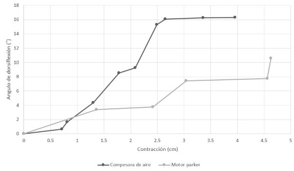
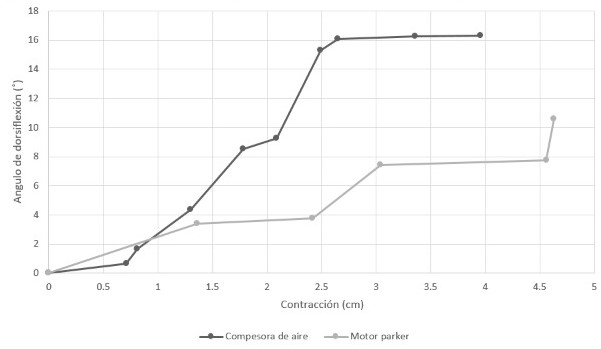

Resultados:
- Elaboramos una gráfica de contracción vs presión y contracción vs angulo a partir de distintos puntos obtenidos de distintos fotogramas de los videos, a partir del uso de la aplicación Imagemeter.
 
